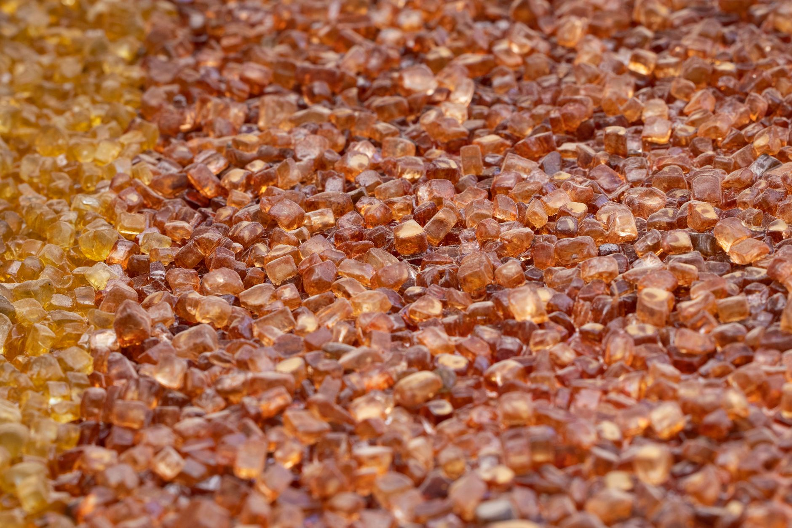

게르마늄 한국산 대체, 실제 공급 가능 시점은 2027년

중국은 2023년 8월 게르마늄 수출통제를 시행한 이후 현재까지 봉쇄를 유지하고 있다. 같은 기간 갈륨에 대해서는 일본향 수출을 4개월 만에 재개했으나 게르마늄은 예외 없이 차단 상태다. 이 비대칭 조치는 중국이 소재별로 차별화된 무기화 전략을 구사하고 있다는 신호다.
국제 게르마늄 가격은 규제 이전 kg당 약 800달러에서 현재 2,400달러 수준으로 3배 급등한 채 고착화됐다. 게르마늄은 광섬유·적외선 광학·태양전지에 필수 소재로, 전 세계 공급의 약 60%를 중국이 장악하고 있다.
고려아연은 아연 제련 공정 부산물에서 게르마늄을 회수하는 독립 공급망 구축에 미국 파트너십을 결합하는 방식으로 국산화를 추진 중이다. 그러나 부산물 회수 공정의 상업화 완료 시점은 2027년 이후로 예상되며, 현재는 파일럿 단계다.
한국의 게르마늄 연간 수입량은 약 30~40t으로 추정되며, 이 중 중국산 비중이 70% 이상이었다. 대체 소싱 루트로 캐나다·러시아·독일산이 거론되지만 단가가 중국산 대비 30~50% 높아 수요 기업의 원가 부담이 직접적으로 발생하고 있다.
게르마늄 통제는 갈륨과 달리 '선별 해제' 없이 장기 봉쇄 기조를 유지하고 있다. 중국이 갈륨은 일본에 풀고 게르마늄은 계속 막는 패턴은, 소재별로 대체 공급망 형성 속도를 감지하며 통제 강도를 조율하는 전략적 행동이다. 즉, 한국이 게르마늄 대체 공급망을 실제로 완성하기 전까지 봉쇄는 풀리지 않을 가능성이 높다.
광섬유 제조사·적외선 렌즈 업체 등 게르마늄 직접 수요처는 이미 재고 확보에 나서고 있지만, 대체 소재 전환이 기술적으로 어렵다. 게르마늄 기반 광섬유 도파관을 실리카 계열로 교체하면 전송 손실률이 달라져 통신 장비 전체 설계 변경이 필요하다. 단기 대응이 아닌 중장기 소재 포트폴리오 재편이 불가피한 구조다.
캐나다 Teck Resources와 독일 PPM Pure Metals가 게르마늄 대체 공급처로 부상하며 수혜를 받고 있다. Teck의 게르마늄 생산 능력은 연 30t 수준으로, 중국발 공백의 일부를 흡수할 수 있는 규모다.
고려아연은 국내 유일의 게르마늄 회수 공정 보유 기업으로, 상업화 완료 시 연간 5~8t 규모의 국산 게르마늄 공급이 가능할 것으로 추정된다. 정부 소부장 지원 1,700억 원 중 희토류·전략광물 회수 공정 분야가 포함될 경우 추가 수혜가 예상된다.
국내 광섬유 제조사인 LS전선과 대한광통신은 게르마늄 원가 상승분을 제품 가격에 전가하기 어려운 구조다. 통신 인프라 발주처(KT·SKT 등)와의 장기 공급 계약상 단가 변동 조항이 제한적이어서 마진 압박이 직접 발생하고 있다.
적외선 광학 소재를 수입해 렌즈를 가공하는 중소 방산 부품 업체들은 대체 소싱 루트를 단독으로 확보할 역량이 부족하다. 캐나다·독일산 전환 시 단가가 30~50% 높아져 납품 단가 재협상 없이는 수익성 유지가 불가능한 상황이다.
게르마늄 수요 기업의 우선 대응은 캐나다·독일산 재고를 3~6개월치 선확보하는 것이다. 현재 가격(kg당 2,400달러)이 추가 상승 전에 물량을 확보해두는 것이 원가 관리의 핵심이다. Teck Resources 및 PPM Pure Metals와의 직접 구매 협약 검토를 권고한다.
고려아연 게르마늄 국산화 공정의 상업화 시점(2027년 예상)을 기준으로 2년 단위 조달 계획을 분리해 수립해야 한다. 2025~2026년은 해외 대체 소싱, 2027년 이후는 국산 전환 비중을 단계적으로 높이는 투-트랙 전략이 현실적이다.
개인 투자자 관점에서는 고려아연(010130)의 게르마늄·갈륨 복합 생산 계획이 2027~2028년 실적에 반영되는 시점을 주목해야 한다. 현재 주가에는 갈륨 15.5t 생산 계획이 일부 반영됐지만, 게르마늄 회수 공정 상업화는 아직 선반영되지 않은 구간이다.
실제 조달 현장에서는 — 게르마늄 수요처가 '재고가 있을 때 사두는' 방어적 구매 패턴으로 전환했고, 이미 유통 단계 재고가 얇아진 상태다. 캐나다·독일산 물량을 확보하려면 최소 8~12주 리드타임을 감안해야 하며, 스폿 구매는 현재 가격에서 추가 프리미엄(10~15%)을 얹어야 하는 상황이다. 수요 기업은 즉시 장기 공급 협약 협상에 나서야 한다.
이 포스팅은 쿠팡 파트너스 활동의 일환으로 수수료를 제공받습니다.